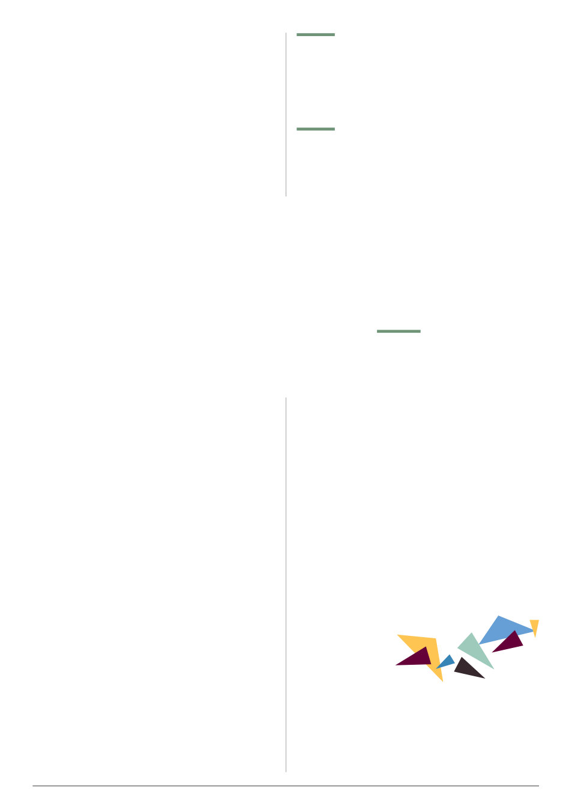

VAA AUSTRALIAN BEE JOURNAL | VOL. 109 No. 09 September 2026 | 29
With increasing climate change it is important to know
how animals will fare at changing temperature ranges.
Researchers looked at previous studies of different species of
bees’ maximum and minimum temperature tolerances. The
main finding was that there’s surprisingly little research in this
area – fewer than 1% of the 20,000 global bee species had
information on this. They did find a strong correlation between
body size and heat tolerance, but oddly native climate did
not correspond to heat tolerance. Cold tolerance however
was correlated to where the bees are from (looking at either
coldest month minimum or annual average temperature).
could learn to avoid acaricides
Most studies of miticides (also known as acaricides) look
at the physiological affects on captive mites who cannot avoid
exposure. Researchers in France wanted to look at whether
mites could learn to physically avoid miticides. Two (of five)
populations tested showed significant avoidance of tau-
fluvalinate (a pyrethroid, the active ingredient in Apistan).
Of the two avoidant populations, one had full pyrethroid
resistance, while one had no prior treatment history with
tau-fluvalinate and only mild resistance. The resistance gene
works physiologically, not behaviourally, so this is an entirely
unrelated trait. No avoidance was shown to amitraz or oxalic
acid, and there were no tests for other chemicals (flumethrin,
Trapping varroa in drone brood increases
Drone frame removal and culling is a popular chemical-free means of varroa
control. However, the production of drones is nutritionally expensive, taking large
amounts of protein, which bees get from pollen. Researchers at Providence College,
Rhode Island (USA) looked at whether causing the bees to raise more drones affected
the workforce’s behaviour, and found that it did cause an increased proportion of the
Bee Bits
August-September 2026
of Udine in Italy challenge the well-
that bees move through jobs based
entirely on their age. Newly emerged
bees were caged and fed a controlled
diet, some of only sugar and some
with pollen. They were released back
into the hive at either 7 or 21 days of
age – the pollen-fed bees were more
likely to be accepted into the brood
area and have high vitellogenin (Vg)
levels, while the sugar only bees were
less likely to be accepted, had lower
Vg levels, and were more likely to
researchers hypothesize that only
young bees (bees have a distinct
cuticular hydrocarbon (CHC) profile
which changes by age, this is the
permitted in the core of the brood
area where they can get the highest
quality nutrition, and that the quality
of this nutrition has a strong influence
on whether they remain nurse bees or
help bees cope with heat stress
This study evaluated the efficacy of dietary supplements enriched with combined
prebiotics and probiotics in alleviating temperature-related stress. Newly-emerged
worker bees were first maintained under optimal conditions (35 °C) and received dietary
supplements for 21 days, after which they were exposed to four temperature regimes
(4, 15, 35, and 40 °C) to evaluate their stress resilience. Bee survival and the activity
of key antioxidant enzymes were assessed. Bees received a commercial probiotic
(Progen®) and the prebiotic Inulin in equal proportions. The results demonstrated that
bees exposed to thermal stress and supplemented with the highest combined dose of
probiotic and prebiotic exhibited significantly higher survival compared with bees [also
exposed to thermal stress but] receiving lower doses, or an unsupplemented diet.
In unsupplemented control groups, temperature stress induced marked increases
in antioxidant enzyme activities, indicating significant oxidative stress. In contrast,
supplementation resulted in a dose-dependent reduction in enzyme activities across
all temperatures, strongly suggesting a protective, and stress-buffering effect. These
physiological benefits were accompanied by an increase in gut microbial abundance
and enhanced indicators of energy metabolism in the supplemented bees.
Overall, our findings demonstrated that combined probiotic and prebiotic
supplementation can effectively buffer honey bees against temperature-induced
physiological stress, highlighting a practical nutritional strategy to enhance colony
resilience under the fluctuating environmental conditions associated with seasonal
variation and ongoing global climate change. [original abstract, slightly abridged].